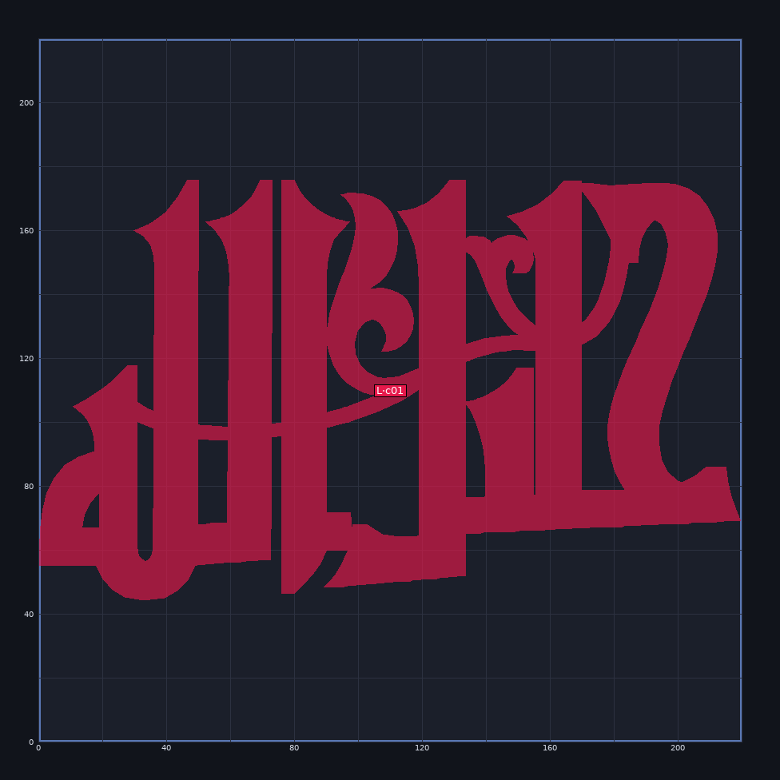
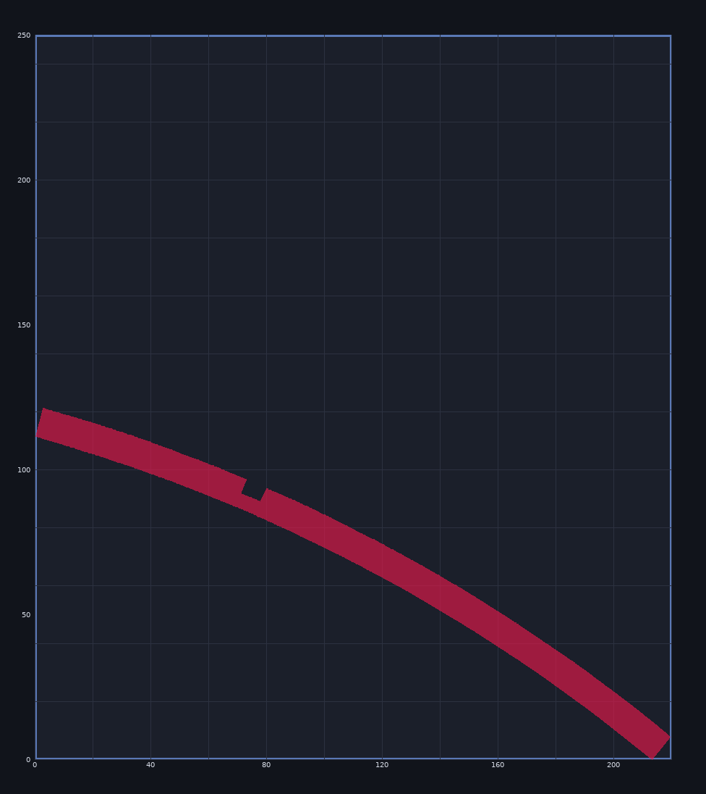
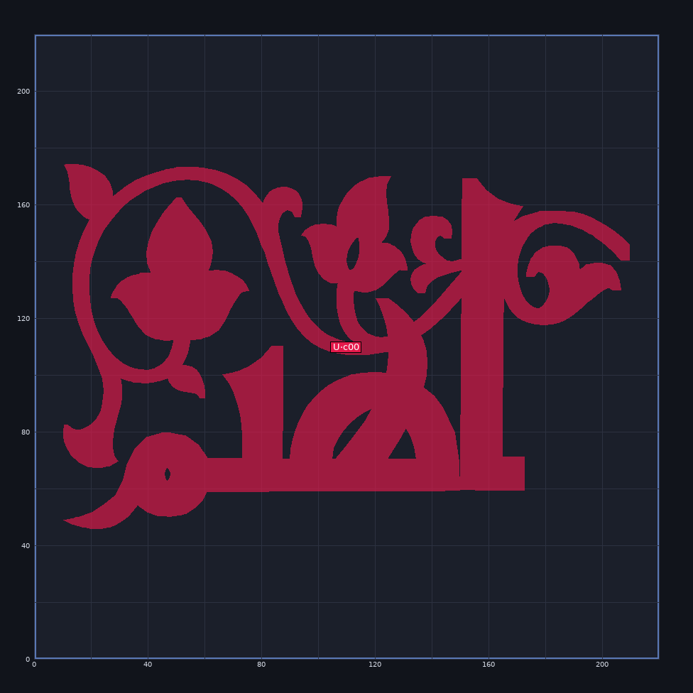
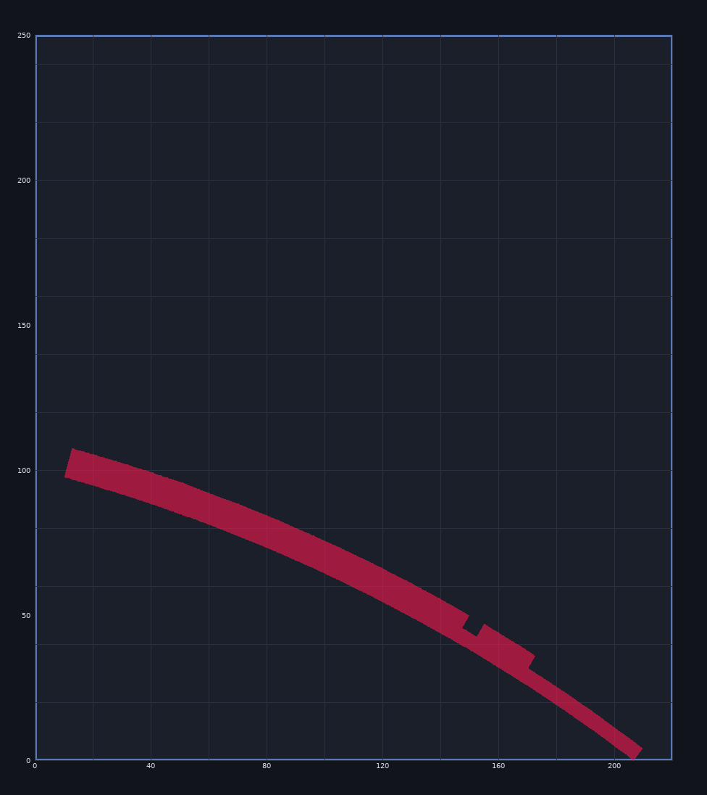
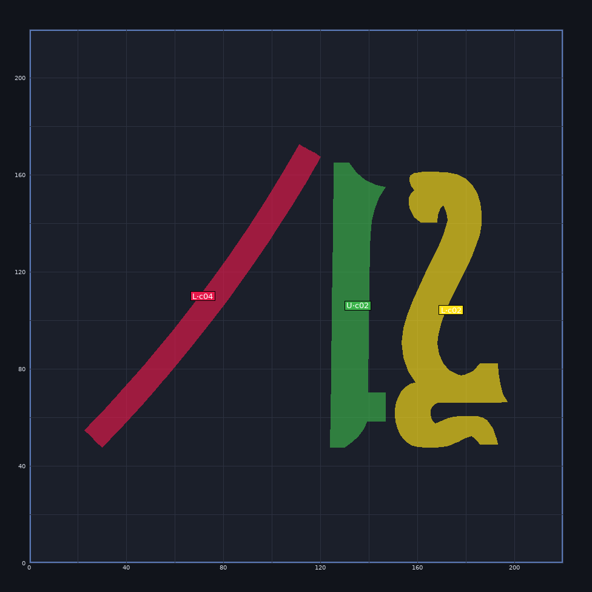
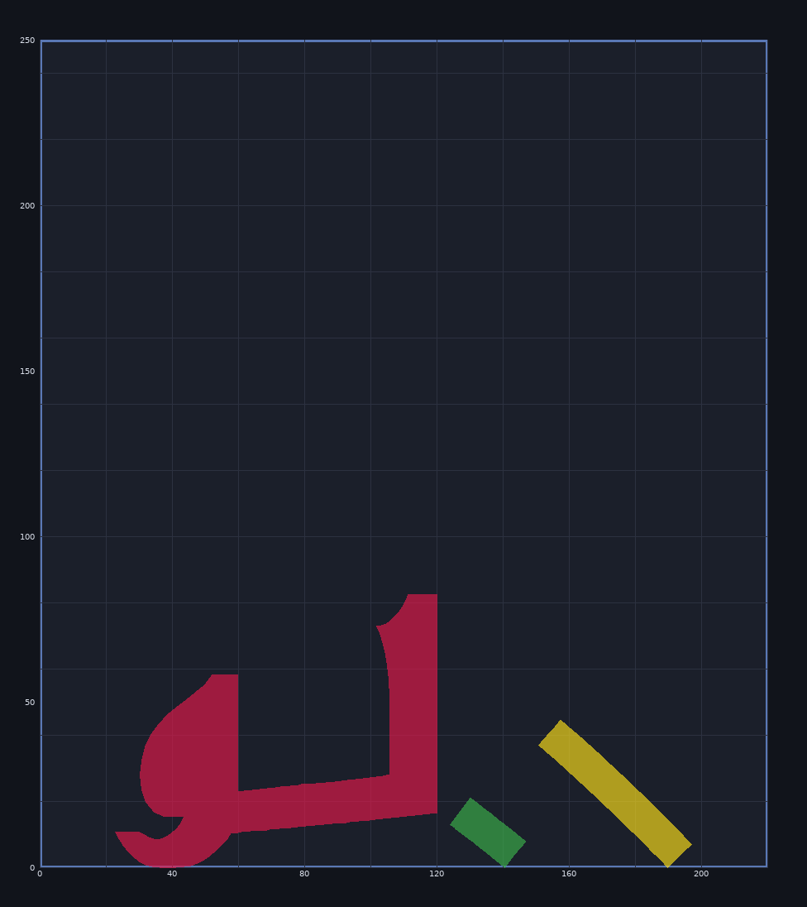
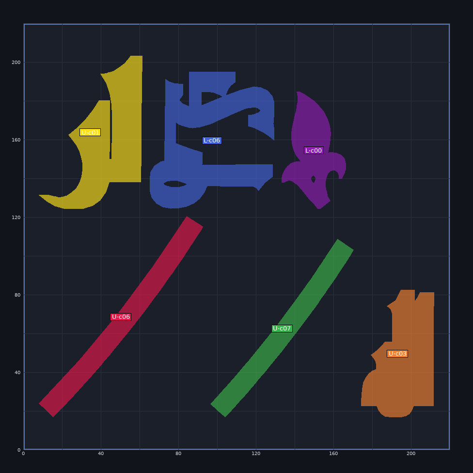
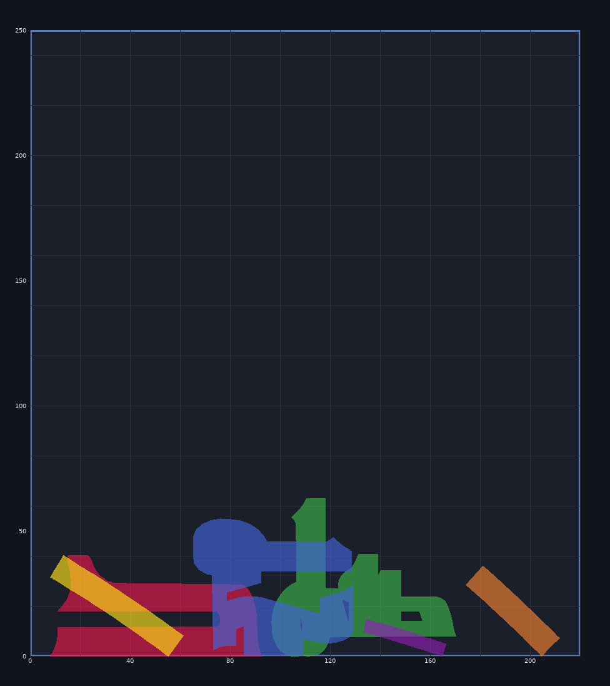
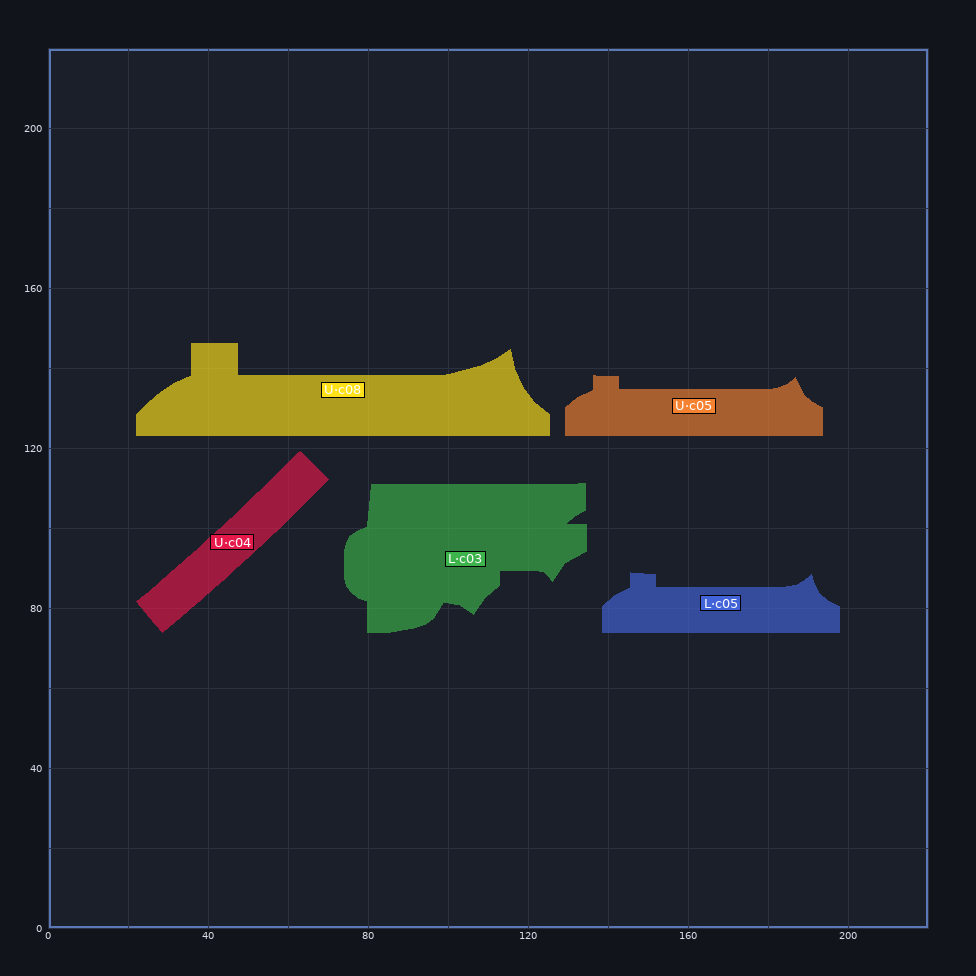
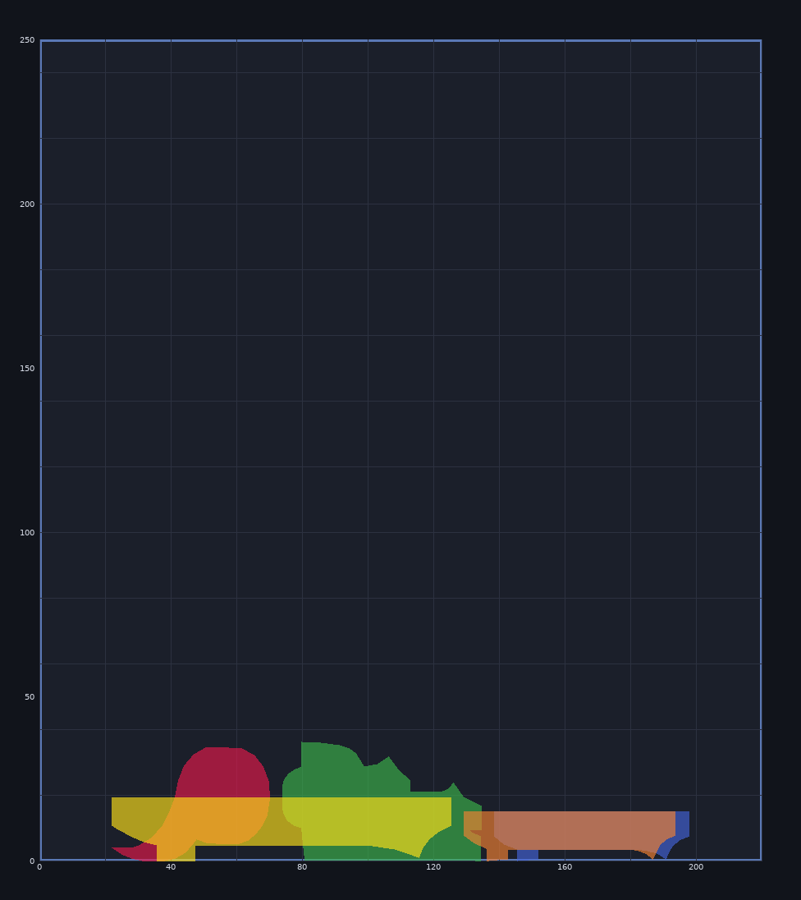

Two STLs split into 16 connected parts, laid flat & packed onto 5 Ender 3 V3 SE beds (220 × 220 × 250 mm).


L·c01 219.4 × 131.4 × 121.0 mm


U·c00 199.5 × 128.2 × 107.3 mm


L·c04 97.2 × 124.7 × 82.4 mm
U·c02 22.7 × 117.1 × 20.9 mm
L·c02 46.2 × 113.4 × 44.5 mm


U·c06 84.5 × 103.6 × 40.1 mm
U·c07 73.7 × 91.7 × 62.8 mm
U·c01 53.0 × 78.7 × 40.0 mm
L·c06 64.0 × 70.5 × 54.8 mm
U·c03 37.3 × 65.7 × 35.9 mm
L·c00 33.1 × 60.1 × 14.6 mm


U·c04 47.9 × 45.3 × 34.3 mm
L·c03 60.4 × 37.1 × 36.1 mm
U·c08 103.1 × 22.9 × 19.2 mm
L·c05 59.2 × 14.9 × 14.8 mm
U·c05 64.4 × 14.9 × 14.9 mm